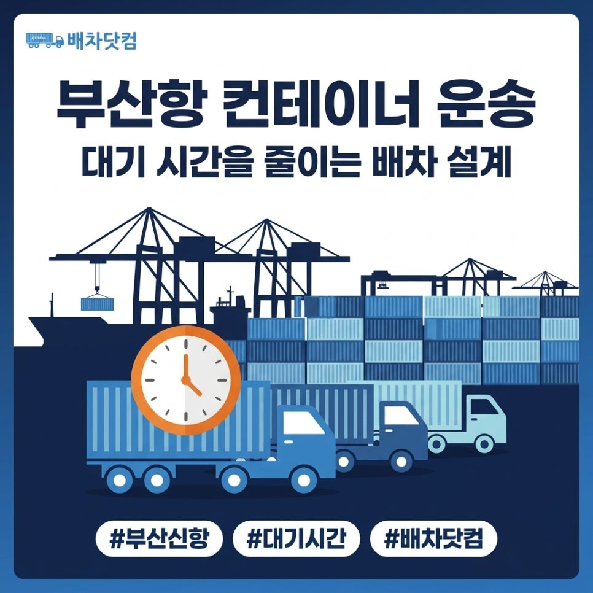
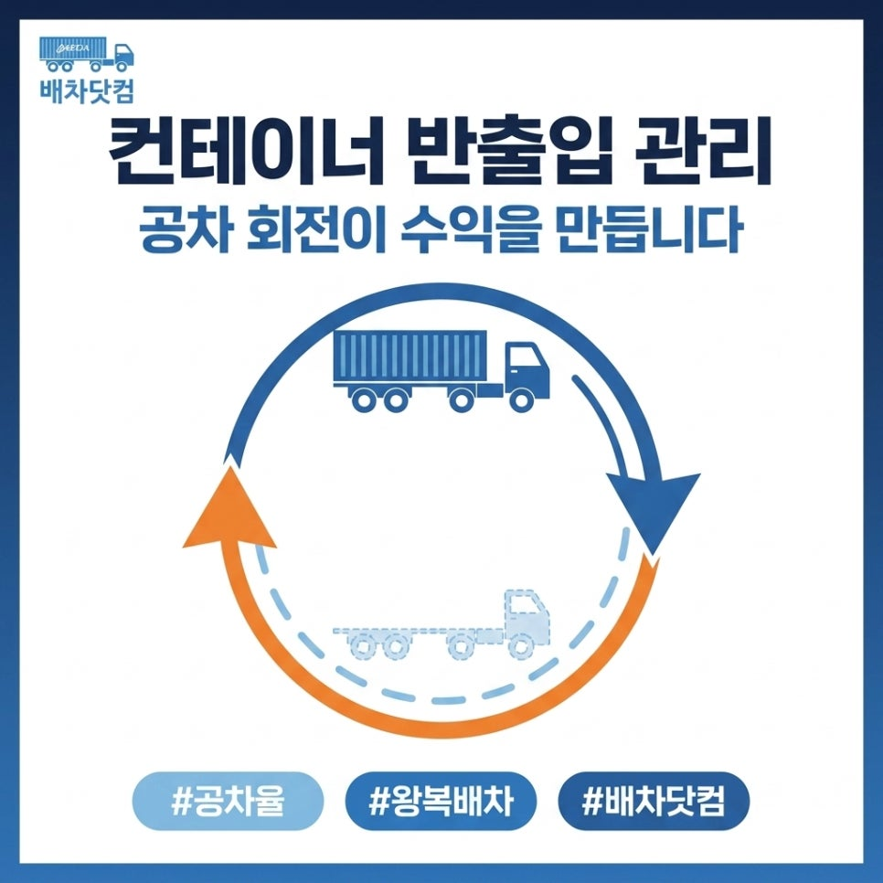

블로그
컨테이너 현장, 바로 쓰는 이야기
컨테이너 반출입, 부두 일정, 컨테이너 운송 관리 이야기를 네이버 블로그에서 모았습니다.
전체 3개 글
부산항 컨테이너 운송, 대기 시간을 줄이는 배차 설계
게이트 앞에서 두 시간을 서 있으면 그날 회전 하나가 통째로 날아갑니다. 혼잡 자체를 우리가 없앨 수는 없지만, 거기서 잡아먹히는 시간을 줄이는 설계는 가능합니다. 부산항 컨테이너 운송에서 멈춰 서는 구간을 줄이는 방법을 정리했습니다.
글 읽기 ->
컨테이너 반출입 관리, 공차 회전이 수익을 만듭니다
같은 대수로 같은 시간을 뛰는데 회사마다 남는 돈이 다릅니다. 단가 차이가 아니라 빈 차로 달린 거리 차이인 경우가 대부분입니다. 컨테이너 반출입 관리를 숫자로 바꿔서 보는 법을 정리했습니다. 여기 나오는 수치는 저희 쪽 사례 기준입니다.
글 읽기 ->
컨테이너 운송관리시스템, 일반 TMS와 무엇이 다른가
일반 화물용 프로그램을 도입했다가 반년 만에 다시 엑셀로 돌아온 회사를 여러 번 봤습니다. 기능이 부족해서가 아니라, 부두 일정이라는 변수를 담을 자리가 애초에 없었기 때문입니다. 컨테이너 운송관리시스템이 왜 따로 존재하는지 비교해서 정리했습니다.
글 읽기 ->